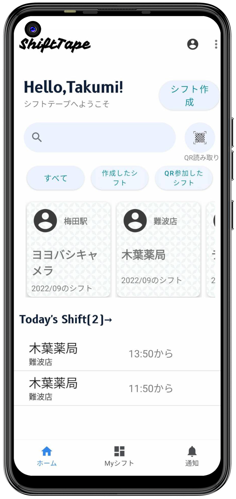
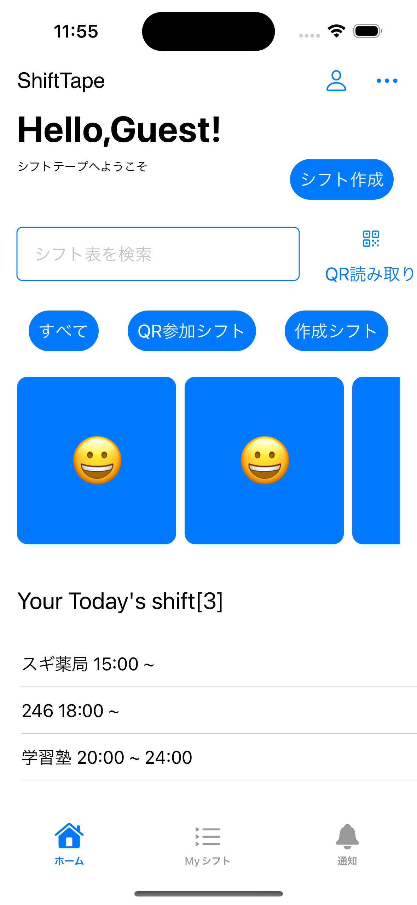

シフト決めからタイムスタンプ、給料の管理までこれ一本
シフトにいつ誰が入っているかわからない、シフトの記入を忘れない、そんな問題を解消するアプリです
ShiftTapeってどんなサービス？
ShiftTapeはシフト表を簡単に決めることがスマホ一つで簡単にオンラインで決めることができるアプリです
まずはスクリーンショット！

Android版
元祖ShiftTape。先行バージョンアップはこちらで行います。

iPhone版
セカンドShiftTape。iPhoneの機能を活かしたShiftTapeを開発しています。

ウェブ版
シフト表を閲覧する機能に絞るなど必要最小限版です。
利用される理由
01
オンラインで決められる
買い物中、大学、職場、どんなところでもシフトを決めることができます
02
レスポンスが早い
紙のシフト表のようにすぐに確認できて、すぐに入力できるような動作を追求しました。
03
セキュリティの重視
シフト表はプライベート。GoogleFirebaseでセキュリティを強固なものにしています。セキュリティルールも厳重に。
04
シフト決めストレス"No!"
シフトを決めるときにいつ、誰がシフトを入れているかをひと目で確認できるようにしたことでストレスが軽減されます
05
オーナーのための設定
シフト管理者が従業員の管理をしやすいように、シフトの細かい設定が可能です。